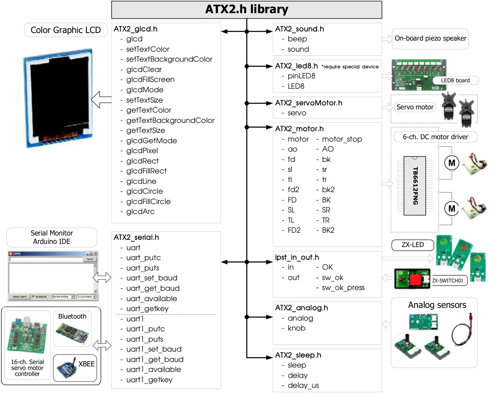

Chapter 4
ATX2 library
The development of C/C++ language programming for the ATX2 controller board is performed under the support of library file; ATX2.h. It helps to reduce the complexity of programming to control the hardware.
The structure of the ATX2.h library file is shown below.

In this section
Original manual, page 53